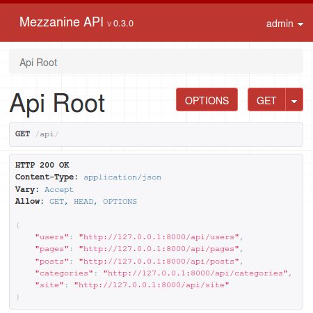

Mezzanine API
RESTful API for Mezzanine CMS
Overview
Mezzanine API is a RESTful API using JSON serialization and protected with OAuth 2. It is an extension for the Mezzanine content management platform, built using the Django framework. The API empowers developers to automate, extend and combine Mezzanine with other services such as mobile apps.
Mezzanine API is in development.
Check back regularly here and on PyPi/Github for updates to the documentation and package, respectively.
Tell us what you need from the API so we can prioritize improvements.
Access all the data your frontend needs
REST API resources for posts, categories, comments, pages, users, and public site data.
We care about security
That's why OAuth2 is utilized for authentication, allowing users to authorize and revoke access to third party applications without the need for those applications to request the user's confidential credentials. Member's only pages can only be accessed over the API if the requesting user is authenticated and has permission.
Filter and search results
Apply filters such as posts?date_min=2015-01-01&category=2 or search posts?search=fitness to narrow down results.
Results are paginated to handle large datasets.
Interactive endpoint documentation
The best way to learn about the API is via the interactive resource documentation which utilizes the popular Swagger UI.
Easy to customize
The API leverages Django Rest Framework which has a large active community.

Installation
In order to install Mezzanine API you'll need Python installed on your system, as well as the Mezzanine CMS.
-
Install the
mezzanine-apipackage using pip:$ pip install mezzanine-api -
Add the following apps in this order to INSTALLED_APPS in your Mezzanine
settings.py:INSTALLED_APPS = ( ... 'mezzanine_api', 'rest_framework', 'rest_framework_swagger', 'oauth2_provider', ) -
Also, add the following lines at the end of your
settings.pymodule:##################### # REST API SETTINGS # ##################### try: from mezzanine_api.settings import * except ImportError as e: pass -
For Mezzanine 4.1.0 and above, add the following code in your Mezzanine
urls.pysomewhere afterurlpatterns += [(approx line 29):# REST API URLs url("^api/", include("mezzanine_api.urls")), -
Migrate the database to support OAuth2:
$ python manage.py migrate -
Start the server:
$ python manage.py runserver
Endpoint Resources
The best way to learn about the API resources is via the interactive resource documentation which utilizes the popular Swagger UI. Open up http://127.0.0.1:8000/api/docs/ in your browser, and you'll see the interactive endpoint resource documentation being displayed (refer to above screenshot). Here you can easily test out the different kinds of endpoint, method, and query parameter whilst you are learning.
Also, if you attempt to access the API itself directly in your browser, you will be shown a browsable web API: 
Enjoy designing a frontend to interact with the REST API using your technology of choice! Alternatively, you can use it to automate, analyse, extend and combine Mezzanine with other services.
Pagination
In order to handle large datasets, pagination is employed. To be consistent, all listing type endpoints
provide a structure that allows for pagination. Please use a "page" parameter to fetch multiple pages of records. For
example listing categories with categories?page=2 will return a JSON structure similar to this:
{
"count": ...,
"next": "http://127.0.0.1:8000/api/categories?page=3",
"previous": "http://127.0.0.1:8000/api/categories",
"results": [
{
...
}
]
}
Permissions
Blog posts and categories may be created or updated over the API by a superuser. This enables you to make new blog posts, for example, using your own innovative frontend or web hooks. Note that this writable access is currently an experimental feature and should be used with caution. There are plans to gradually open up the rest of the API for write access over forthcoming releases.
Note that the users resource is provided so that you can carry out tasks such as retrieving the current user's
details, view a blog post author's name, and list suggested usernames for predicted text entry. For privacy, the email
field can only be accessed by the relevant owner or a superuser. However, the author's full name is accessible to all
by default (if provided) since blogs tend to operate on a real name basis. If you wish to customize this, take a look
at the UserSerializer class.
Secure communication
You SHOULD use HTTPS in production!
In this guide, we consider a development environment on a local machine and connect to the server over HTTP. Whereas for production, you SHOULD use HTTPS for secure communication over the internet. Without it, all the API and Mezzanine authentication mechanisms can be compromised.
Authenticate with sessions
Session authentication is enabled by default. It can be disabled by commenting out the relevant line in settings.py. If you wish to use session based authentication for write access as well as read access, you will need to setup a valid CSRF token for any PUT or POST requests. See the Django CSRF documentation for more details.
Authenticate with OAuth2
Register
Open up http://127.0.0.1:8000/api/oauth2/applications/register/ in your browser. (If you are using API version <= 0.3.0, you may experience a 404 error. To resolve this, add the line LOGIN_URL = "/api/auth/login/" to your settings.py.)
Go ahead and register a new OAuth application. Just enter a reference name, choose confidential client type and
...password-based authorization grant type:

Request your access token to use for API authentication:
$ curl -X POST -H "Accept: application/json; indent=4" \
-d "grant_type=password&username=<username>&password=<password>" -u"<client_id>:<client_secret>" \
http://localhost:8000/api/oauth2/token/
For client_id and client_secret, copy and paste those that you were given in the previous step. The username and
password are the credentials of the Mezzanine user you wish to login as. You will get a JSON response like:
{
"access_token": "<your_access_token>",
"token_type": "Bearer",
"expires_in": 36000,
"refresh_token": "<your_refresh_token>",
"scope": "read write groups"
}
Test
The following test should fail (i.e. no user listings shown) if you are not currently authenticated:
$ curl http://localhost:8000/api/users
{
"detail": "Authentication credentials were not provided."
}
The following authenticated test should succeed and show you a list of users if you registered OAuth with a superuser account:
$ curl -H "Authorization: Bearer <your_access_token>" http://localhost:8000/api/users
You can also test your access token by entering it at the top of your interactive API Resource Documentation page.
Getting help
If you have questions about the API, consider leaving a message in our Gitter chat room or using the general Mezzanine discussion group.
Otherwise, if you think you have found a bug, please use GitHub issues and include the steps necessary to reproduce it.
Contributing
Mezzanine API is an open source project managed using the Git version control system. The repository is hosted on GitHub, so contributing is as easy as forking the project and committing back your enhancements.
Roadmap
- Refinement
- Gradual roll-out of writeable API access
- More tests
- Further documentation
- Example API client